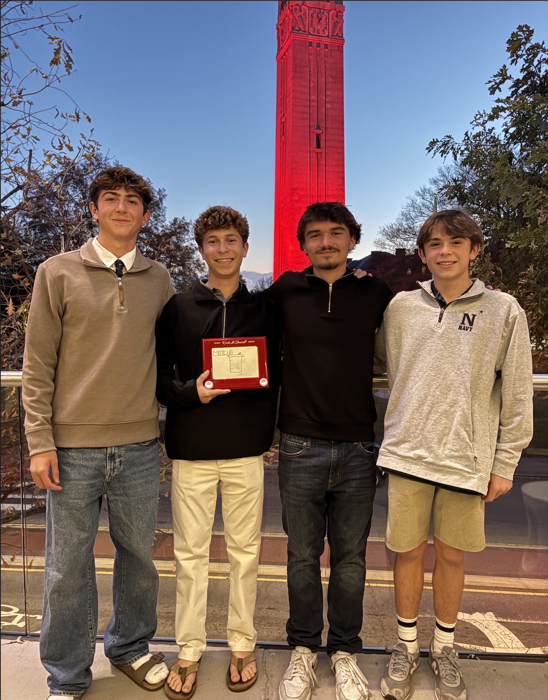

About the Developer
My name is Jude Sydell, I am a sophomore at Cape Henlopen High School, and I am passionate about creating things that have the potential to make a real difference. I personally built this website as a part of my larger aim to use technology, leadership, and community engagement to make a difference in my community while preparing for college to study computer science. By working on projects such as organizing a summer run club and creating digital platforms from scratch, I am learning how to take an idea and turn it into a structured, real-world project. I am particularly interested in the areas of startups, web development, and app development – using code not only to create products but to solve real-world problems. Each project that I undertake is a part of a larger mission: to develop as a programmer, give back to my community, and ultimately gain acceptance into a top university where I can continue to study computer science at the highest level.
